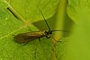

limnephilus

Definition: Limnephilus is a genus of caddisflies in the family Limnephilidae. There are over 180 species of Limnephilus, described between 1824 and 1999.Several species of Limnephilus are endangered, including Limnephilus perpusillus, Limnephilus parvulus and Limnephilus janus being listed as a species of special concern in Wisconsin, and Limnephilus pallens being listed as a species of special concern in Michigan.This genus is most important in lakes, spring ponds, and beaver ponds. Some of its species do well enough in spring creeks and slow pools to be important to trout there. Some Limnephilus species are multibrooded. It is fairly frequent in Leicestershire and Rutland, and common and widespread over much of Britain.
Source: Wikipedia
Wikipedia Page (Something wrong with this association? Let us know.)
Wikidata Page (Something wrong with this association? Let us know.)